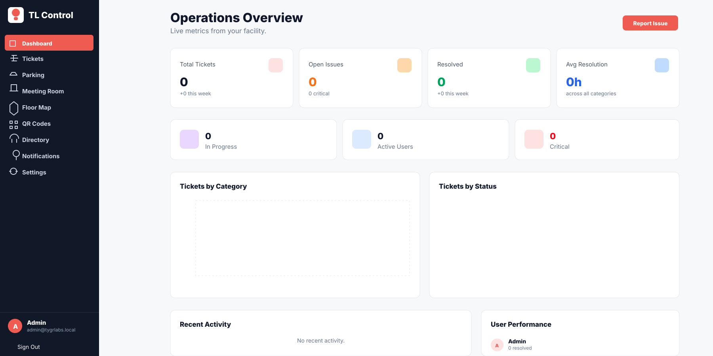
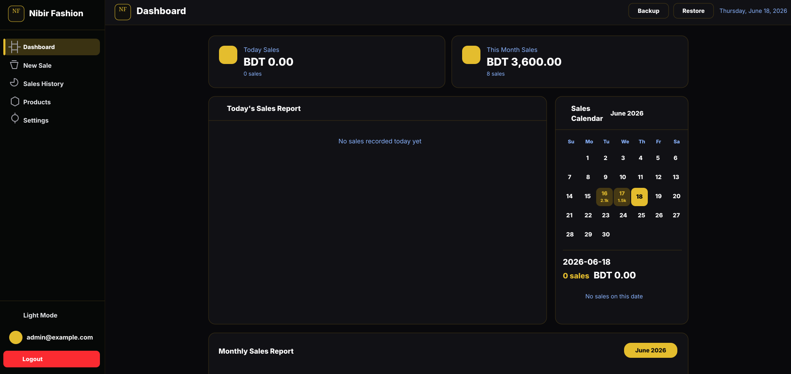

Agentic AI Systems
Designing AI agents and agentic workflows for operations, support, admin tasks, and business process automation.
AI AgentsTool CallingAI Assistants
AI Engineer | Agentic AI Developer | Founder of Tech AI Ops
I design and deploy AI-powered systems, agentic workflows, DevOps pipelines, and scalable cloud infrastructure by combining Generative AI, automation, Linux, networking, and cloud engineering.
About
I am an AI Operations & DevOps Engineer with 4+ years of experience across infrastructure, cloud, networking, Linux systems, automation, and AI-powered software development.
My work focuses on building production-grade AI solutions using agentic workflows, LLM integration, AI automation, prompt engineering, and AI System Engineering practices. I combine my background in DevOps, Azure, Docker, Kubernetes, Linux administration, and network engineering to build scalable systems that solve real business problems.
I am also the founder of Tech AI Ops, an AI-focused technology agency that helps modern businesses scale faster through smart digital solutions, automation, AI-powered software, web platforms, and cloud infrastructure.
AI Expertise
Designing AI agents and agentic workflows for operations, support, admin tasks, and business process automation.
Integrating large language models into applications, dashboards, internal tools, and support systems.
Automating repetitive operational tasks with AI platforms, scripts, APIs, and workflow orchestration.
Building AI-enabled systems with secure infrastructure, deployment pipelines, monitoring, and DevOps practices.
Professional Experience
My experience combines AI operations, DevOps automation, cloud infrastructure, Linux administration, and production network engineering.
Founder / Agency
I founded Tech AI Ops to help businesses adopt AI-powered digital solutions, automation, and scalable software systems. The agency focuses on smart business tools, workflow automation, web platforms, AI-powered applications, cloud solutions, and digital transformation systems.
Visit Tech AI OpsFeatured Projects

AI-Assisted Internal Business Platform

Custom Business Software / Billing Automation

AI DevOps & Cloud Infrastructure

Network Automation

Personal Branding / DevOps Deployment
My Toolkit / 0
Technical Skills & AI Platforms
Education
Certifications
Contact
I am open to opportunities in AI Engineering, Agentic AI Development, DevOps, Cloud Infrastructure, Network Automation, and custom business software development. For professional collaboration, consulting, or project discussions, feel free to reach out.
 Email Me
Email Me Portfolio
Portfolio